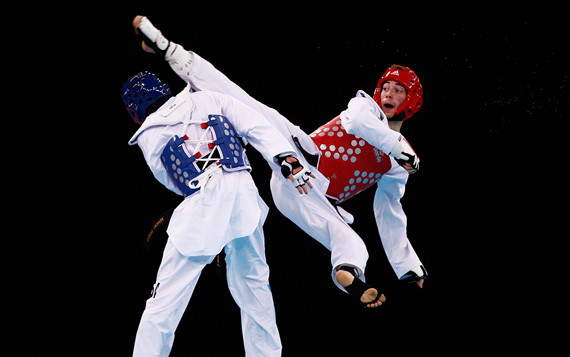

Тхэквондо - олимпийский вид спорта, корейское боевое искусство, особенностью которого является возможность использования в бою ног для ударов и бросков. В отличие от других корейских единоборств, в тхэквондо не используют оружия, считается, что человеческое тело само по себе очень грозное оружие.

История возникновения тхэквондо.
В начале XX века Корея находилась под властью Японии, и мастерам корейских боевых искусств приходилось уходить в подполье. После освобождения Кореи от японской оккупации в 1945 году, боевые искусства начали выходить из подполья. Но этот период не прошел бесследно, некоторые техники сохранились, но духовно-философская традиция была утрачена. Залов было много, и число инструкторов, преподающих разные виды боевых искусств, тоже множилось, но мало кто из них серьезно знал историю своей школы и мог объяснить содержательную сторону ее традиции. По окончании войны 1950-1953 годов в Корее существовало очень много школ, в которых практиковались боевые искусства с самыми разными названиями: тхэсудо, субак, субак-до, квонбоп, тэгён, тансудо, тэквонбоп и так далее. До начала 60-х годов государство никак не вмешивалось в их деятельность. Перелом в государственной политике по этому вопросу наступил с приходом к власти президента Пак Чон Хи. В этот период впервые возникает стремление поставить боевые искусства на службу режиму, создав единую систему единоборства, которая находилась бы под контролем государства, в отличие от разрозненных направлений. Официального признания тхэквондо добилось лишь в 1955 году, после чего и начался его путь по спортивным аренам всего мира. За столь короткий срок тхэквондо приобрело невероятную популярность во всем мире. На сегодняшний день предпочтение этому виду спорта отдали более 40 млн. человек.
Техника тхэквондо.
Тхэквондо основано на скорости движения и концентрации энергии в ключевой момент. Именно она и придает удару силу и точность. Энергоэкономные с точки зрения биодинамики движения требуют от спортсмена не только понимания механизмов их действия, но и постоянную отработку и совершенствование. Именно базовая техника вмещает в себя основные движения, перемещения, атаки, движения защиты и, соответственно, их всевозможные комбинации. Только после того, как она будет полностью освоена, спортсмен может переходить к комплексам пумсэ или к упражнениям по бою с противником – керуги. Эффективная защита и результативная атака напрямую зависит от правильного положения тела спортсмена. Поэтому стойки в тхэквондо занимают одно из главных мест в базовом обучении. Правильно выбранная в конкретном случае стойка сама по себе является залогом успеха. Техника ударов ногами в тэхквондо очень развита. Удары ногами не только наносят вред противнику на большом расстоянии, они еще и намного сильнее ударов руками и, соответственно, больше работают на поражение. Базовая техника включает и удары руками. В техквондо удар может наноситься и кулаком, и открытой ладонью. Выполняются такие удары на близком расстоянии либо в прыжке, либо в положении стоя. Основным назначением ударов руками является вывод противника из занимаемой ним позиции и, соответственно, увеличение уровня его уязвимости. Блоки могут выполняться как руками, так и ногами. Их назначение – противостоять ударам противника. Для того, чтобы правильно блокировать удар противника нужно предвидеть само направление его атаки. Кроме того, рука, блокирующая удар должна прийти в движение одновременно с началом движения тела для атаки. То есть, вы одновременно и блокируете удар противника, и защищаете свою собственную атаку.
Экипировка тхэквондо.